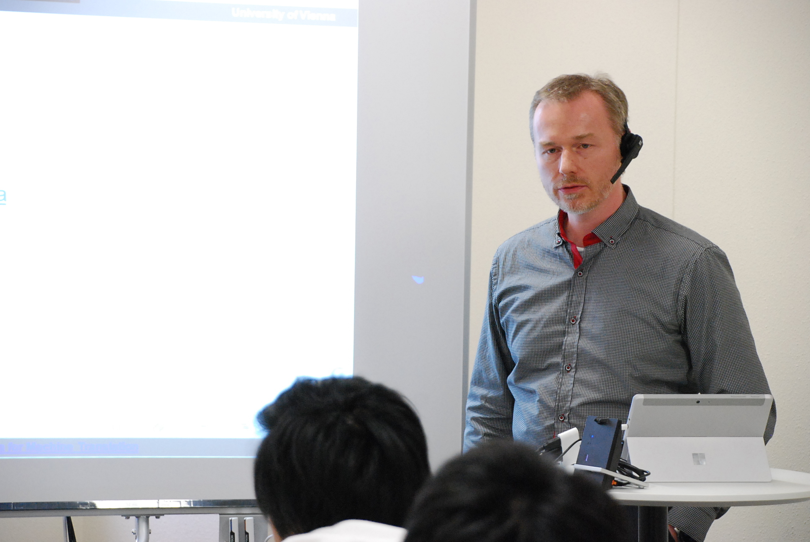
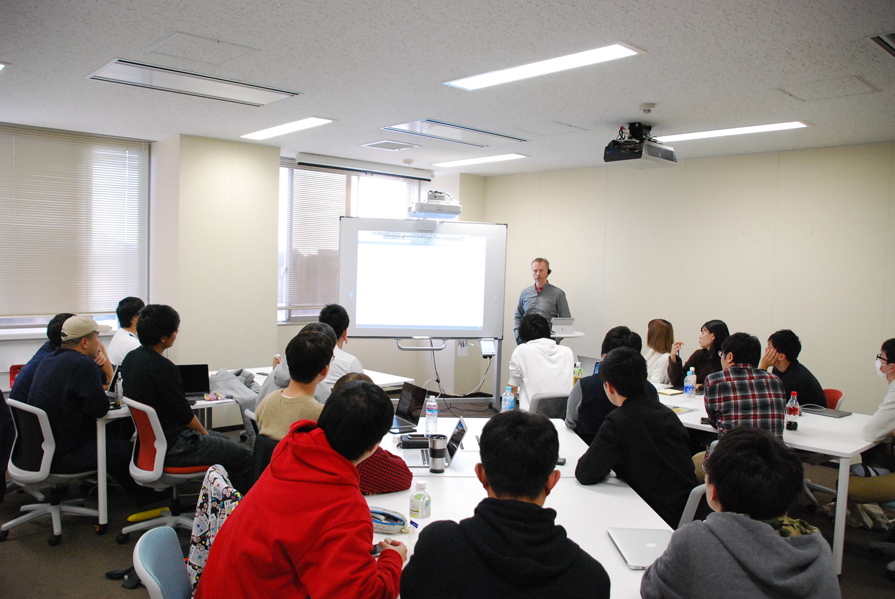
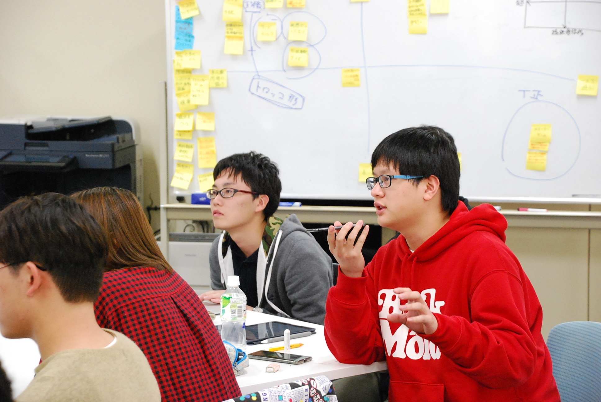

ウィーン大学翻訳研究センターのBartholomäus Wloka博士が「機械翻訳のための対訳コーパス収集」について講演を行いました。英語による講演でしたが、機械翻訳を用いて日本語や中国語に翻訳し、各言語の字幕を各自のデバイスで見ながら聴講しました。質疑応答も機械翻訳を用いて各自の母語で行われ、互いに理解に努めることで意思の疎通が図られました。

本講演では機械翻訳の概要について説明された後、CEF. ATを含むウィーン大学のプロジェクトや対訳コーパス収集について紹介いただきました。CEF. ATは英独言語資源やドメインに特化したデータ、対訳コーパス、用語集を用いて学習された機械翻訳システムで、流ちょうかつ正確な翻訳結果を生成します。

多くの機械翻訳が対訳コーパスに依存しているため、特定のドメインに特化した対訳コーパスを集めれば集めるほど、そのドメインの翻訳結果は良くなります。品質と適用範囲はどちらも同様に機械翻訳にとって重要な要素と考えられます。CEF AT.では日本語と英語のウィキペディアから対訳コーパスを自動的に収集しており、無意味なテキストをフィルタリングすることや、ウィキペディア以外の言語資源を探すことが非常に重要な課題となっています。
